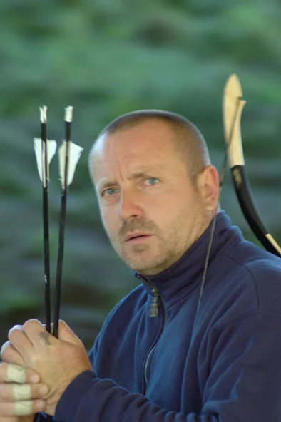

***
*** KASSAI .LAJOS...
Kassai Lajos a modernkori lovasíjászat megteremtője. 15 év alatt dolgozta ki egy ősi magyar harcművészet alapjain nyugvó sportág szabályrendszerét és edzésmódszereit.
Kassai Lajos a modernkori lovasíjászat megteremtője. 15 év alatt dolgozta ki egy ősi magyar harcművészet alapjain nyugvó sportág szabályrendszerét és edzésmódszereit.
Kezdetben Magyarországon, majd egész Európában, ezt követően Amerikában és Kanadában tartott sikeres bemutatókat, edzőtáborokat, majd létrehozta a Lovasíjász Világszövetséget.

A világ szinte minden részén vannak tanítványai, és keresik fel azt a bázist Kaposmérő határában, amely a jelenlegi sportág központja. jd egész Európában, ezt követően Amerikában és Kanadában tartott sikeres bemutatókat, edzőtáborokat, majd létrehozta a Lovasíjász Világszövetséget.
A világ szinte minden részén vannak tanítványai, és keresik fel azt a bázist Kaposmérő határában, amely a jelenlegi sportág központja.
************
Gondolatok a harcművészet köréből
... A gondviselés abban a meghálálhatatlan kegyben részesített, hogy rám bízta a XX. század végére feledésbe merült lovasíjászat újraélesztését. A feladat egyszerre jelentett számomra elviselhetetlen terhet és olyan élményt, melynek egyetlen pillanatát sem cserélném el a világ minden kincséért sem. Amíg egy kultúra él, addig élmény, és onnét tudjuk, hogy halott, amikor már csak információ. Az élmény minőségét pedig lelki beállítottságunk határozza meg. Aki a harcos útján jár, annak a fájdalom elkerülhetetlen, de ha céljaink összhangban vannak képességeinkkel, a szenvedés nem válik osztályrészünkké. A test, a szellem és a lélek összhangja teremti meg a harmóniát az életünkben, és nyújt támaszt megpróbáltatásaink során.
Képzeljünk magunk elé egy fogatot: erőtől duzzadó lovak, jól megépített kocsi és egy kiváló hajtó. A lovak ösztöneink, érzelmeink, indulataink; a hajtó értelmünk, és a kocsi testünk szimbóluma. Most pedig játsszunk el a gondolattal, és képzeljünk két göthös gebét a fogat elé, ültessünk egy gyakorlatlan, ostoba kocsist a bakra, és idézzünk magunk elé egy rozoga, lerobbant szekeret. Bizony, ezen sorscsapások közül egy is elég ahhoz, hogy születésünktől a halálunkig tartó utunkat egyik kátyúból a másikba való vergődéssé nyomorítsa. Végignézve embertársainkon, kinél kevésbé, kinél jobban kiütköznek karmikus fogatuk hiányosságai. De még mielőtt túlzottan elmerülnénk a bennünket körülvevő világ kaján szemléletében, vessünk csak egy röpke pillantást önmagunkba. Mit látunk magunk elé nézve, aszott párákat vagy tajtékzó méneket? Kocsink könnyen gördül, vagy foghíjas küllőin nyikorog rozsdás kerekünk? És vajon mi, kik mindezt a bakról szemléljük, józanul látunk-e, elég tiszta-e tükrünk, melyben önmagunkat szemléljük? A lovasíjászat mint harci művészet lehetőséget ad számunkra, hogy újra és újra kipróbáljuk önmagunkat.A megpróbáltatások nem azért jelentenek számunkra értéket, mert teljesítjük őket, hanem azért, mert a siker fénye vagy a kudarc árnyéka jól rajzolja ki eddig előttünk rejtve maradt hibáink árnyait. Egy harci művészetet gyakorló ember számára sohasem az a fontos, ami jól megy. Önmagunk csiszolásának rögös útján mindig a legnagyobb ellenállás irányába kell haladnunk. ...
*********